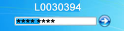
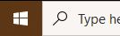
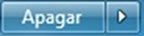
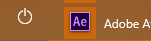
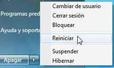
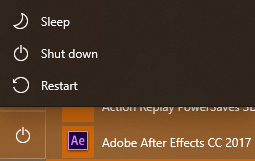

Tema 3. Inicio y cierre de sesión en Windows
El sistema operativo Windows trabaja por sesiones, es decir, cada que enciende la computadora es una sesión, y cuando apaga la computadora, se cierra esa sesión. Además de las sesiones, una computadora puede ser utilizada por varias personas, y cada persona puede utilizar programas diferentes. Para que cada persona pueda personalizar la computadora, el sistema operativo permite trabajar bajo perfiles.
Un perfil es un nombre que se utiliza para personalizar el funcionamiento y otros aspectos decorativos en su computadora. Es como cuando se arregla la oficina de la forma en que la necesita, esto mismo hace Windows. Cada usuario (persona que utiliza una computadora) puede utilizar un perfil para identificarse y disponer el funcionamiento de la computadora, logrando que al momento de identificarse, Windows recupere y establezca los elementos decorativos y de funcionamiento definidos por el usuario que está empezando a trabajar.
Windows 7
Windows 10
Cómo iniciar una sesión
Cuando la computadora enciende, hay tres opciones para entrar a ella:
- Que entre directamente sin pedir datos de usuario y contraseña.
- Que entre a una pantalla de Windows donde haya varios usuarios (perfiles) pero no se pida contraseña.
- Que entre a una pantalla de Windows donde haya varios usuarios (perfiles) y se pida contraseña.
Si se pide contraseña, sólo se escribe en el recuadro blanco que aparece y se hace clic en el icono
Cómo cerrar una sesión
Cuando se ha terminado de trabajar con la computadora, siempre se deberá salir de Windows; es recomendable guardar todo el trabajo realizado antes de finalizar una sesión, de no ser así se perderá toda la información al apagar el sistema.
Para cerrar una sesión de Windows y apagar la computadora debe seguir los siguientes pasos:
- Cierre todas las aplicaciones o programas que se encuentren abiertos.
- Haga clic en el botón Inicio (Start) 
- Haga clic en el icono "Apagar equipo" (Turn Off Computer)  
- Si no desea apagar el equipo, puede:
- Suspender (Stand By): esta opción la puede utilizar para cuando no desea cerrar todos los programas o páginas que tiene abiertos, y va a continuar trabajando en la computadora; temporalmente la puede suspender para que no se quede abierta. Esta característica es particularmente útil para mantener la carga de batería de equipos portátiles y para reducir el consumo de energía cuando equipo está inactivo.
- Reiniciar (Restart): esta opción se utiliza cuando se ha instalado un programa nuevo, o la computadora marca algún o error, o marca que es necesario reiniciar.
- Cancelar (Cancel): cuando no se desea ninguna de las anteriores opciones.
En Windows 7 debe hacer clic en la flecha que aparece junto al botón para acceder a estas opciones:
En Windows 10 al hacer click en el boton de apagar se mostraran estas opciones:
